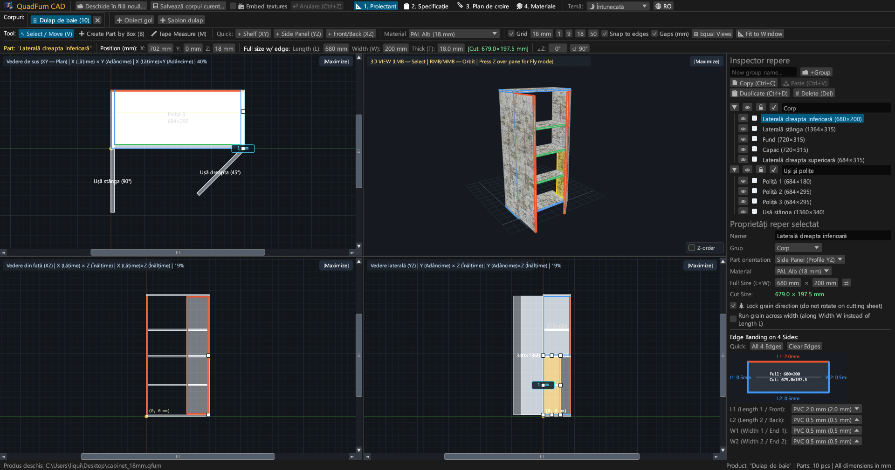
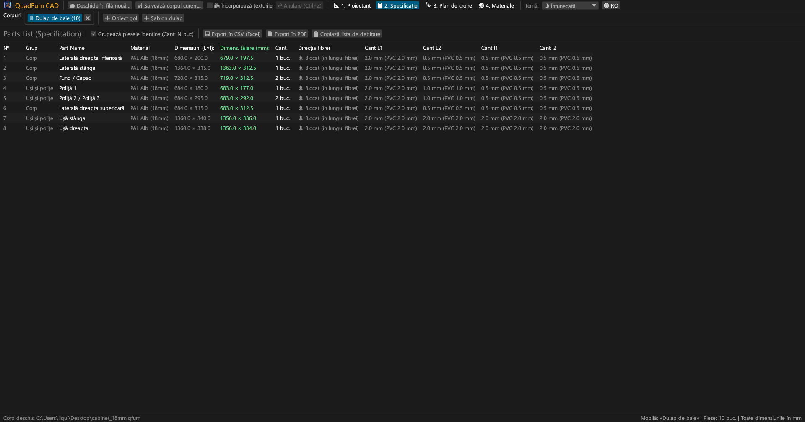
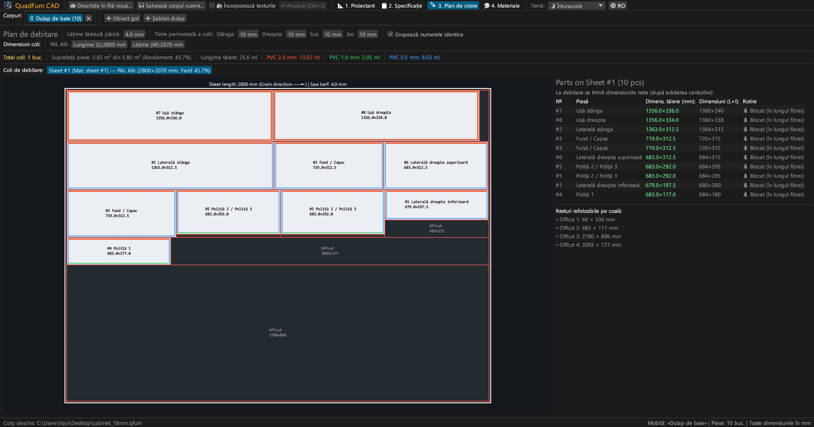
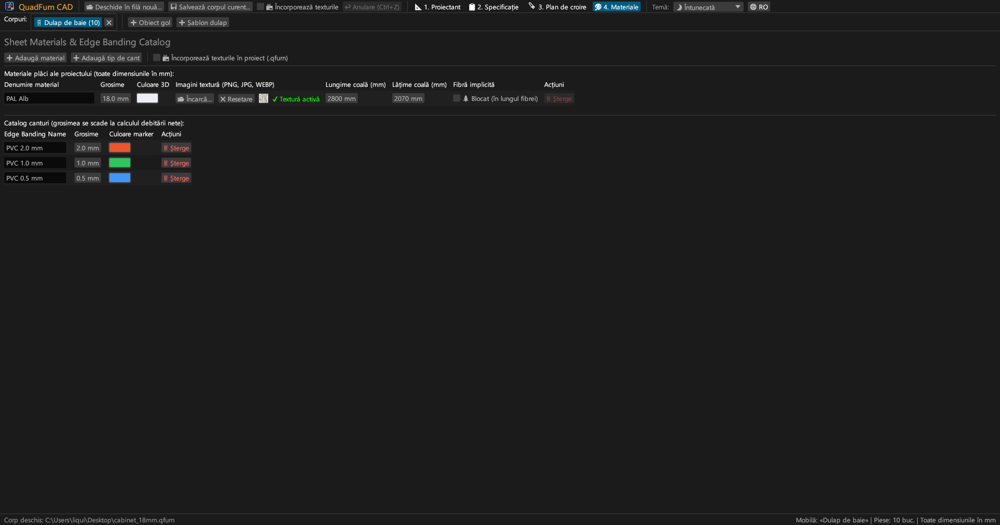
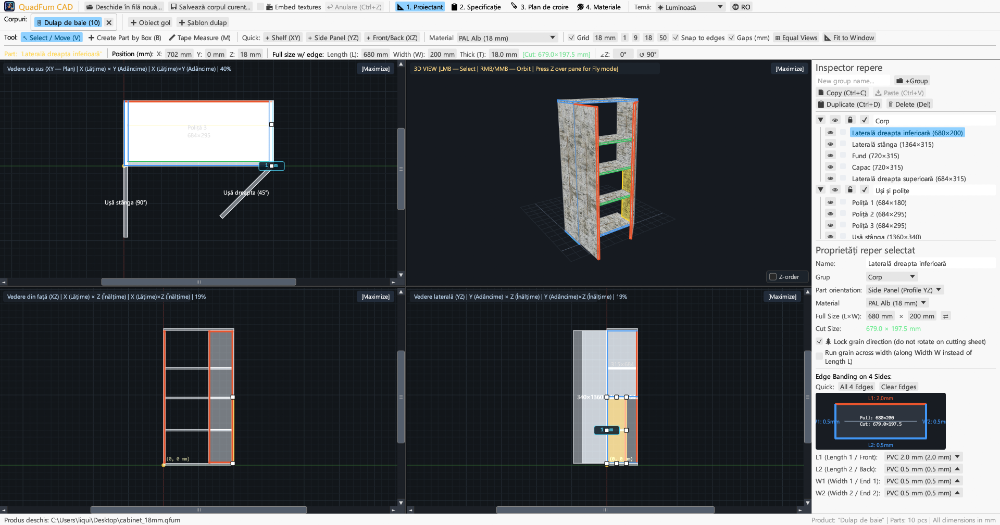
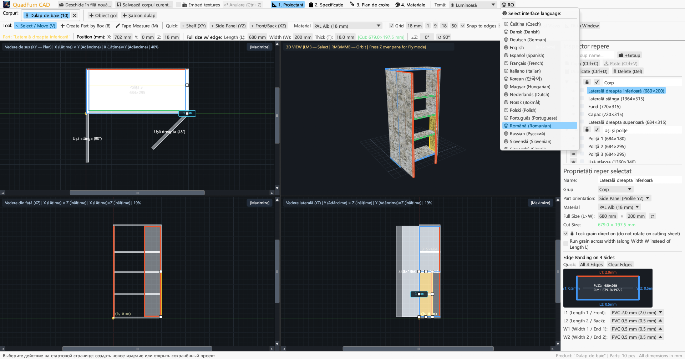

CAD rapid pentru tâmplari și producători de mobilă. Modelare sincronă în 4 vederi, introducere formule în cote, deducere cant și planuri de tăiere.

Reunește desenul în 4 vederi, controlul numeric direct și optimizarea debitării într-o singură aplicație.
Editare simultană în Vedere de Sus (XY), Fațadă (XZ), Secțiune (YZ) și 3D cu bare de derulare, aliniere magnetică și cote dinamice.
Introducere directă a coordonatelor (X, Y, Z), dimensiunilor (L × W × T) și unghiului cu calculator matematic (ex. 600-4).
Alocare de cant PVC/ABS (0,4–2,0 mm) pe cele 4 laturi pentru calculul exact al cotelor nete de tăiere la circular.
Motor de debitare care respectă fibra lemnului, lățimea pânzei (4,0 mm), îndreptarea marginilor și evidența resturilor utile.
Lucru concomitent la mai multe piese de mobilier. Copiere și lipire piese între file cu transfer de materiale.
Export gata de tipar în format A4 Landscape: listă de piese, desene 4 vederi, diagrame de tăiere și sumar materiale cu +15% rezervă.





Fișiere binare independente fără dependențe externe de rulare.
Executabil portabil cu pictogramă, fără instalare necesară.
sudo apt install ./quadfurn_0.2.2_amd64.deb
Pachet Universal pentru Apple Silicon (M1–M4) și Intel x86_64.
| Tastă | Acțiune | Domeniu |
|---|---|---|
| V | Instrument Selecție / Mutare (8 mânere, selecție prin casetă) | Vederi 2D |
| B | Creare piesă prin dreptunghi în planul activ | Vederi 2D |
| M | Ruletă (măsurare exactă a distanțelor în milimetri) | Vederi 2D |
| Z | Zbor liber la persoana întâi (WASD) | Fereastră 3D |
| ← → ↑ ↓ | Deplasare piese după pasul grilei (Shift pentru pas dublu) | Vederi 2D |
| Ctrl + C / V | Copiere / lipire piese (între file de proiect) | Toate filele |
| Ctrl + D | Duplicare piese selectate cu decalaj | Proiect activ |
| Ctrl + S | Salvare proiect în fișier .qfurn / .json | Proiect activ |
| Ctrl + Z | Anulare acțiune (până la 40 de pași) | Proiect activ |
| Delete / Backspace | Ștergere piese selectate | Proiect activ |